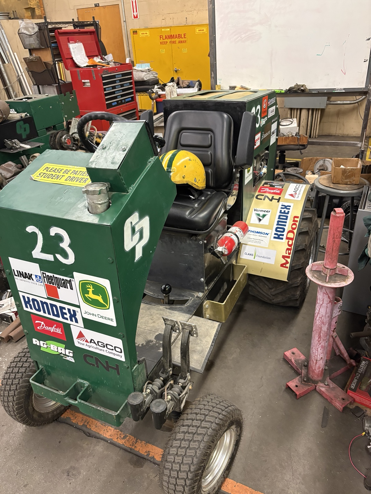
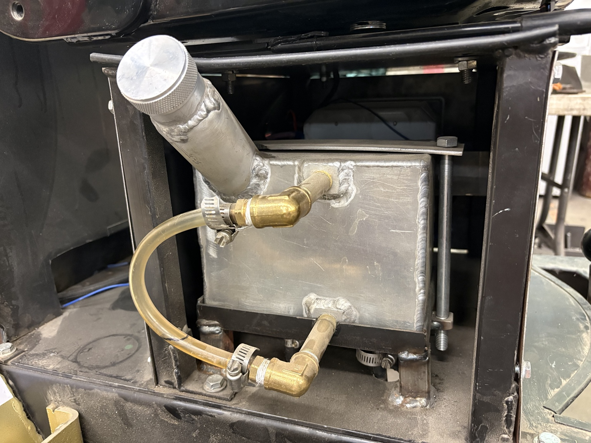
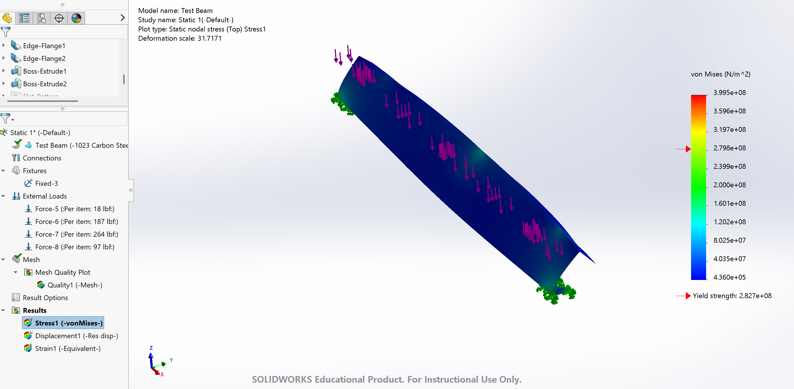
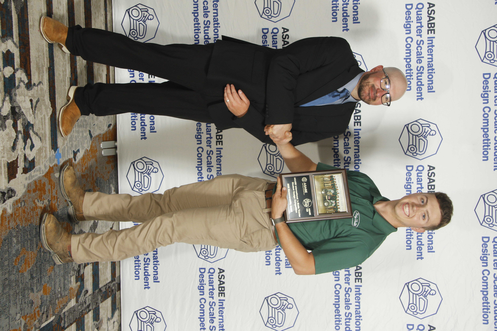

Quarter Scale Tractor

Project Overview
Cal Poly ASABE Quarter Scale Tractor is a student design-build competition project. The team develops and fabricates a functional tractor while integrating structural, hydraulic, drivetrain, steering, braking, and operator-system requirements.
My Role
Structural Lead
I work with a five-person structural team and coordinate design and fabrication work across CAD modeling, manufacturing, and assembly. I have personally worked on approximately 10 fabricated or assembled parts and designed or revised approximately 20 components in SolidWorks.
Design
I designed or revised brake-caliper mounts, the brake-steering assembly, operator platforms, fuel tank, seat mount, steering column, tow hook, hitch mount, engine mount, front axle, hydraulic tank, and wheel-motor mounts. The frame and most mounts use steel, while the fuel tank uses aluminum. I coordinated structural interfaces with other subsystems to support fit, assembly, serviceability, and packaging.


Preliminary Structural Analysis
I created an initial static simulation of a Quarter Scale Tractor frame rail to establish a representative loading and support condition for structural evaluation. This Version 1 model will be refined as the frame design, loading assumptions, and mounting conditions are finalized.

Manufacturing & Fabrication
I performed CNC plasma cutting and contributed welding, drilling, and manual lathe work while the structural team moved components from CAD models to manufactured hardware. A hitch design issue required mounting the hitch lower than planned and creating a revised mount that accommodated two emergency-release mechanisms.
Testing & Troubleshooting
I supported fit-up and alignment checks during assembly and drove the maneuverability event at competition. The team received the Maneuverability Award.

Final Result
Our structural team delivered components and assemblies that supported a functional competition tractor. The project strengthened my experience in design leadership, CAD-to-fabrication workflow, and mechanical integration.
What I Learned
Learned the importance of designing around real manufacturing constraints, checking subsystem interfaces early, and communicating clearly across a multidisciplinary team. The project strengthened my skills in SolidWorks, fabrication planning, structural design, troubleshooting, and engineering leadership.